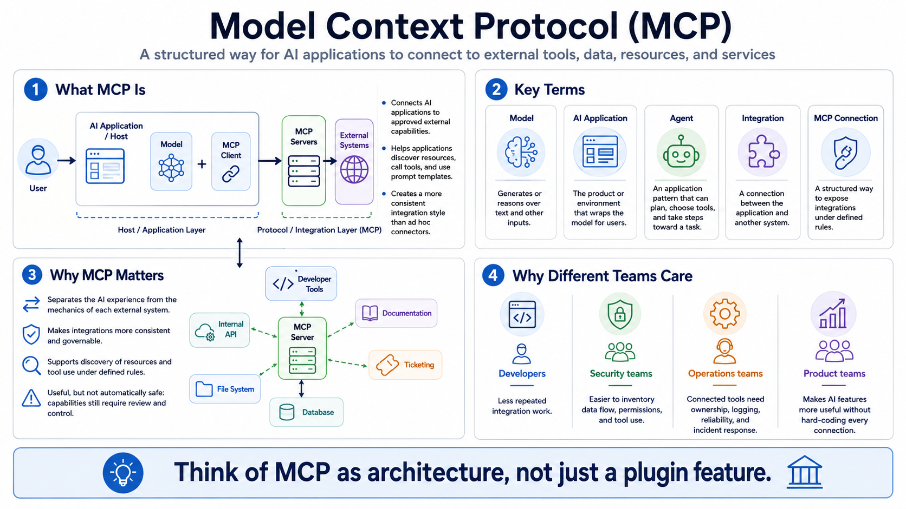

What MCP Is
Connecting to LMS... Progress: in progress

Narration
Model Context Protocol, often shortened to MCP, is a protocol pattern for connecting AI applications to external tools, data, resources, and services. The core idea is simple: an AI system is more useful when it can work with relevant context and approved capabilities outside the model itself. Instead of every AI application inventing a different integration style, MCP gives hosts, clients, and servers a more consistent way to describe and use external capabilities.
A model is the component that generates or reasons over text and other inputs. An AI application is the product or environment that wraps the model for users. An agent is an application pattern where the system may plan, select tools, and take steps toward a task. An integration connects the application to another system. An MCP connection is one structured way to expose those integrations so the AI application can discover resources, call tools, or use prompt templates under defined rules.
MCP is often compared to a standard integration layer for AI applications because it separates the AI experience from the mechanics of each external system. A developer tool, a documentation source, a ticketing platform, a file system, a database, or an internal API can be exposed through a server with capabilities the host can understand. That does not mean every capability is automatically safe or appropriate. It means the integration surface can be made more consistent and governable.
Developers care about MCP because it can reduce repeated integration work. Security teams care because it makes data flow, permissions, and tool use easier to inventory and review. Operations teams care because connected tools need ownership, logging, reliability, and incident response. Product teams care because MCP can make AI features more useful without hard-coding every connection. The most important habit is to understand MCP as architecture, not merely as a plugin feature.